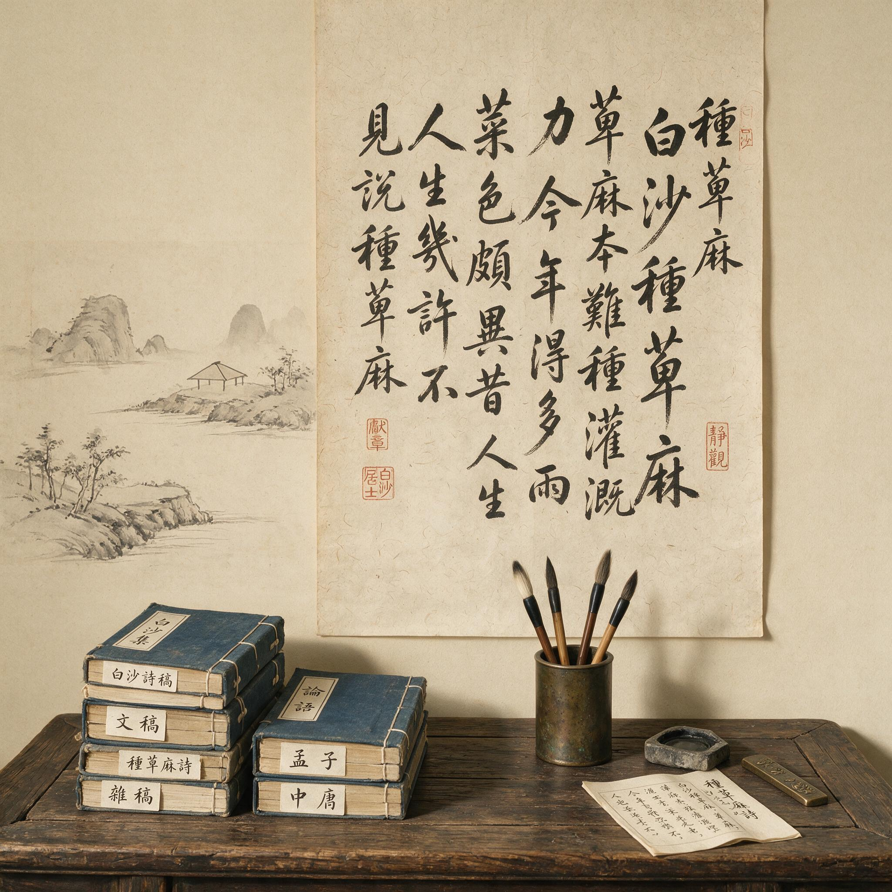

第 10 章
园林留白的制度化
凡结林园，无分村郭，地偏为胜。开林择剪蓬蒿，在涧共修兰芷。径缘三益，业拟千秋。围墙隐约于萝间，架屋蜿蜒于木末。山楼凭远，纵目皆然；竹坞寻幽，醉心既是。轩楹高爽，窗户虚邻；纳千顷之汪洋，收四时之烂漫。梧阴匝地，槐荫当庭；插柳沿堤，栽梅绕屋。结茅竹里，浚一派之长源；障锦山屏，列千寻之耸翠。虽由人作，宛自天开。
计成在《园冶》里写下这段话时，已经是崇祯四年。那是一本写给造园者的书，但读它的人大多是文人。计成自己就是文人，早年以绘画闻名，后来转而造园。他知道自己在说什么——“虽由人作，宛自天开”，这八个字后来成了中国园林美学最核心的表述，被反复引用、反复阐释，几乎变成了一句行业口号。
但很少有人追问：为什么“人作”需要伪装成“天开”？为什么明明耗费巨资、动用大量人工堆山理水，最后却要让人觉得这一切本就应该在那里？
这个问题如果放在禅宗的语境里，答案会变得不一样。万历到崇祯年间，江南文人造园成风。苏州一地，大大小小的园林数以百计。
文徵明设计了拙政园，王世贞在太仓经营弇山园，计成本人先后在常州、仪征、扬州为人造园。这些人彼此认识，互相参观、题咏、写记，形成了一个密集的品评网络。他们讨论园林的方式，和讨论诗文、书画的方式如出一辙——讲气韵、讲布局、讲虚实、讲藏露。这些词汇来自画论，而画论又深受禅宗影响。
但园林毕竟不是画。画是二维的，观者站在画外；园林是三维的，人要走进去，要在其中生活。这就带来了一个画论无法完全覆盖的问题：空间中的“空”应该怎么处理？
计成的回答是“窗户虚邻”。这四个字很轻，但分量极重。“虚邻”不是没有邻居，而是让虚空成为邻居——窗外的空地为墙，远山为壁，天空为顶。这听起来像是一种修辞，但在拙政园里，它是可以走进去的实际空间。
拙政园最初是唐代诗人陆龟蒙的宅地，元代为大弘寺，明正德年间御史王献臣罢官回乡，买下这块地，请文徵明参与设计。文徵明为拙政园画过三十一景，每景配诗一首，后来刻石嵌在园中。
从这些诗画里，能看到一个反复出现的构图原则：主体建筑退后，让水面占据画面前景；建筑群不追求对称，而是顺应地势散落分布；视线所及，总有空白——或者是一片水面，或者是一道白墙，或者是一丛竹林后面透出的天空。
这不是偶然。文徵明是沈周的学生，沈周学画于杜琼，杜琼又深受禅宗影响。这一脉文人画传统强调“留白”——画面上不画的地方和画了的地方同样重要，甚至更重要。南宋的牧溪、玉涧等人已经把这种观念推到了极致，他们的山水画往往只有几笔，大片空白，却让人觉得满纸烟云。
文徵明把这种二维的留白转移到了三维空间里。在拙政园，水面就是留白，白墙就是留白，漏窗框出的天空就是留白。
问题是，园林毕竟是实体的。画上的留白不需要成本，宣纸本身就有空白；园林里的留白却要花钱——买地、挖池、砌墙、维护水面清洁。他们口口声声说禅说空，实际上却在享受最精致的物质生活。
这种批评不是没有道理。但如果我们只停在这个层面，就错过了更重要的东西。
王世贞在《弇山园记》里写过一段话，恰好回应了这个问题。他说造园之难，不在堆山叠石，而在“使其有致”。
“致”是什么？他没有直接定义，但整篇记文都在说明：致是空间节奏，是视线收放，是人在园中行走时不断被中断、被转向、被引向意外景色的那套语法。王世贞的弇山园占地不大，但他通过曲径、回廊、假山、漏窗，让行走路线不断折叠，让人在同一块土地上走出几倍于实际面积的感觉。这就是“致”——空间本身变成了一种语言，说话的不是石头和水，而是石头和水之间的那些空隙。
这种对话的空隙，可以追溯到禅宗的“机锋”。禅门师徒问答，往往问东答西，或者沉默以对，或者突然棒喝。这些做法的共同点是制造一个意义的中断，让听者从习惯性的思维链条里脱落出来。中断本身就是传达。园林里的留白、曲径、漏窗，在空间上做着同样的事情——它们不断打断视线的连续性，让人无法一眼看尽，无法一览无余。你正沿着廊子走，以为前面是尽头，转过弯却是一片水面；
你以为墙后什么都没有，走近才发现墙上开着一个扇面形的漏窗，窗外一株芭蕉正绿。这是空间的机锋。
文震亨在《长物志》里谈过漏窗的做法。他说窗的形制不可重复，一园之中，扇形、月形、瓶形、花瓣形要交错使用，让每个窗框出的景致都不一样。窗框本身就是选择——把芜杂的世界切出一个画面，让被框住的部分变成画，让框外的部分暂时消失。
这和禅宗说的“截断众流”有相通之处。意识之流不断涌来，禅的工夫是截断它，让某个瞬间从流中脱落，成为孤立的、被充分经验的当下。漏窗在做同样的事：它截断了视线的流动，强迫你停下来，只看这一小片被框住的景色。
但截断不是目的。目的是让被截断之后的那个瞬间变得饱满。禅宗说“空故纳万境”，空不是什么都没有，空是容纳的前提。碗是空的才能盛饭，房间是空的才能住人，心是空的才能映照万物。
园林里的留白也是这个逻辑——水面空着，才能倒映天空和建筑；白墙空着，才能让树影落在上面；漏窗空着，才能把远处的山借进来。“借景”是《园冶》里最重要的一章。
计成说借景有远借、邻借、仰借、俯借、应时而借，核心原则是“借者，园虽别内外，得景则无拘远近”。这句话的禅意很浓。
“内外”是一个基本分别，禅宗要破的就是各种分别——内外、主客、自他。园林的围墙划出了内外，但借景打破了这堵墙。远处的山不在我的地里，但透过漏窗，它进入了我的视线，成了我园中的一景。这不是法律意义上的占有，而是感知意义上的拥有。我不需要买下那座山，只需要留出一扇窗。
这种“不占有而拥有”的态度，是文人处理禅的超功利性与园林物质投入之间张力的关键。造园确实要花钱，有时甚至是巨额花费。王献臣造拙政园，王世贞经营弇山园，都投入了大量财力。但他们试图通过空间设计传达的，恰恰是一种不被物质捆住的心态。
水面是挖出来的，但水面上什么都不放，只有天空和倒影；白墙是砌起来的，但白墙上什么都不画，只有光影和苔痕。这种“花钱买空”的做法，在逻辑上看似矛盾，在体验上却可以成立——它用物质手段创造了一个超越物质的感知空间。这里需要做一个区分。
园林的“空”和禅堂的“空”不一样。禅堂是真正的空——四壁萧然，只有一个蒲团。那是专为静坐设计的空间，它的空直接服务于心的空。
园林的空要复杂得多。它是有内容的空，是被精心布置过的空，是和其他元素——建筑、花木、山石——形成对比和张力之后才显现出来的空。没有那些亭台楼阁，水面就只是一片水塘；没有那些白墙，光影就没有落处。园林的空不是原始的空，而是被“做”出来的空，是一种美学效果。
这正是“虽由人作，宛自天开”的深意所在。“人作”是事实，“天开”是效果。计成不掩饰前者——他的整本书都在讲怎么做，怎么堆山，怎么理水，怎么选石，怎么借景。但他要求最终的效果必须让人觉得这一切不是做出来的，而是本来就该这样。
这个要求和禅宗对修行者的要求结构相同：修行是人为的努力，但开悟必须像自然发生一样，不能有刻意求索的痕迹。六祖惠能说“本来无一物”，不是否定修行，而是说修行的最终指向是超越修行本身。文徵明在拙政园里实践了这种观念。
他设计的“远香堂”四面开窗，坐在堂中可以环顾四周景色，建筑本身几乎消失在视野里。这是建筑上的“无我”——房子不是主角，它只是为观看提供一个位置。堂北是一片荷池，夏天荷花盛开时，香气从四面飘入，人在其中，不觉得身在建筑里，而觉得身在荷风中。这和禅堂静坐的体验有相通之处：静坐久了，身体的感觉会变得轻盈，自我与外界的边界会模糊。远香堂用空间设计制造了类似的效果——不是通过消除外界刺激，而是通过精心安排外界刺激，让人忘记建筑的存在。
王世贞在弇山园里用了另一种策略。他的园子地处太仓城中，四周都是民居，没有真山真水可借。于是他在园内堆了一座大假山，山上种满树，山后留出一条窄径。人从窄径走过，抬头只见山和树，看不到围墙，恍惚间以为身在深山。
这是用遮挡来制造错觉。遮挡不是欺骗，而是选择——选择让你暂时看不到不想看的东西，让你把注意力集中在被呈现出来的那一面上。这和禅宗处理烦恼的方式很像。
烦恼无法消除，但可以“转”——把注意力从烦恼的对象上移开，让它落在别处。园林的遮挡、借景、留白，都是“转”的空间技术。它们不否认围墙外有嘈杂的市井，不否认园主有俗世的烦恼，但它们提供了一个空间，让人可以暂时把那些东西放在一边，让心落在另一个地方。
禅作为心性技术，在王维那里是个人的修养，在白沙那里是静坐的工夫，都还停留在个体的身心层面。园林的出现改变了这个格局。一旦“留白”“借景”“曲径”这些手法被总结出来、写进书里、被不同的造园者使用，它们就变成了一套可以传授、可以复制、可以跨时空传播的空间语法。任何人只要按照这套语法造园，就能制造出类似的空间体验——不一定能达到文徵明、王世贞的高度，但基本的结构是可以复制的。
计成的《园冶》就是这套语法的教科书。他总结了造园的各种原则和技法，从选址、布局到具体的施工工艺，条分缕析。
但这本书的奇妙之处在于，它虽然讲技术，却始终不离开意境。讲窗子，他说“窗户虚邻”；讲借景，他说“得景则无拘远近”；
讲整体效果，他说“虽由人作，宛自天开”。这些表述本身就是禅意的——不是逻辑定义，而是意象的启发，让读者自己去体会。这和禅宗祖师接引学人的方式一致：不直接告诉你答案，而是给你一个话头，让你自己去参。
这种传播方式保证了园林禅意不只是某几个天才文人的个人创造，而是可以进入更广泛的社会层面。晚明江南，造园不再是极少数高官巨富的专利，中等收入的文人也开始经营小园。他们买不起大块地，但可以在有限空间里运用同样的空间语法——一个小院，一角白墙，一扇漏窗，一株孤石，就能制造出余韵。这种“小中见大”的能力，正是禅宗“纳须弥于芥子”的空间版。
网师园是一个好例子。这座园子占地只有半公顷，在苏州园林里算小的，但走在其中，并不觉得局促。设计者用了一道道墙和廊子，把空间分割成若干小单元，每个单元自成一景，单元之间通过漏窗和门洞互相渗透。你在一个角落看到的是粉墙和石笋，转过去看到的是水面和亭子，再转过去又是一道回廊。
空间不断折叠、展开、再折叠，像一首诗在换韵。这就是“空”的语法在运作——不是大片的空，而是被精心切割、被有意安排的空，在每一个转折处等着你。
这种空间体验的核心是“当下性”。你无法同时看到所有景致，只能一步一步走，一处一处看。每一步都有新的画面出现，旧的画面随即消失在墙后。这种“步步有景，景景不同”的节奏，强迫你停留在当下的这一步，不能提前看到后面，也不能回头看到前面。曲径的功能就在这里——它不是为了让路更长，而是为了让时间变慢，让每一步都变成独立的当下。
禅宗讲“活在当下”，听起来很玄，但在园林里，它是一个身体的事实。你的身体在移动，视线在不断被刷新，脚步不能太快——太快就会错过漏窗里的那株芭蕉，错过水面上的那片倒影，错过白墙上的那道光。园林用空间节奏控制了身体节奏，身体节奏又影响了心理节奏。你慢下来，静下来，不是因为有人在旁边敲木鱼，而是因为空间本身在让你这么做。这是禅从心性技术转化为生活环境的关键一步。
在王维那里，禅是诗中的空寂；在白沙那里，禅是静坐中的内观；在文徵明、王世贞、计成这里，禅变成了可以走进去的空间。你不需要打坐，不需要参话头，只需要在园中慢慢走，让空间带着你慢下来、静下来、空下来。
当然，这种“空”和禅堂里打坐证得的“空”深度不同——园林的空是审美的、暂时的、依赖环境的，不是彻底的解脱。但它有自己的价值：它让禅的体验变得可及，不需要出家，不需要苦修，只需要走进一座园子。
这恰好回应了那个反方解释。批评者说文人以禅为名行享乐之实，这个批评在道德层面有其力量，但它忽略了一个事实：正是这种“享乐”让禅从少数人的苦修变成了多数人可以接触的日常经验。
宗教性的禅要求舍离，审美的禅允许参与。前者深刻但狭窄，后者浅近但宽广。文人选择后者，不是因为他们虚伪，而是因为他们的社会位置和生活需求决定了他们不可能走前一条路。他们要的是在仕与隐之间、在世与出世之间找到一个可以喘息的空间。园林就是这个空间。
“可居住的禅境”——这个说法本身包含着一个悖论。禅境本来是出世的、离言的、不落形迹的，怎么可以“居住”？
但文人恰恰做到了这一点。他们把禅境从不可说的层面拉下来，落实在石头、水面、白墙和漏窗上，让它变成可以触摸、可以进入、可以在其中吃饭睡觉读书会友的日常空间。这不是对禅的贬低，而是对禅的翻译——把一种极端的心性技术翻译成一种温和的生活美学。
当然，翻译总有损失。园林的禅意再浓，也不是禅堂里的那一喝、那一默。它被稀释了，被美化了，也被制度化了。

制度化意味着它变成了一套规则，可以被学习、被复制、被消费。晚明江南的造园热，某种程度上就是禅意空间被消费的过程。富商造园，可能并不真懂禅，但他们可以请懂的人来设计，按照《园冶》的规则来施工，最后也能造出一座“有禅意”的园子。
这就引出了一个问题：当禅意变成可以购买的商品时，它还是禅意吗？这个问题没有简单答案。
但有一点是清楚的：如果没有这种制度化，禅对文人生活的影响就会始终停留在个体修养的层面，不会进入空间的维度，不会改变人的居住环境，不会让那么多人在日常生活中体验到——哪怕只是浅层的体验——那种慢下来、静下来、空下来的感觉。从观念传播的角度看，制度化是观念扩大影响的必经之路。代价是深度被稀释，收获是广度被扩展。
文徵明晚年退居苏州，在自己的宅园里读书作画。他的画室窗外种着一株梧桐，秋天叶落时，他会让人不要扫，让黄叶积在阶前。有人问他为什么，他说：“听雨打叶声。”这个回答很轻，不需要解释。他知道雨打在不同东西上声音不同——打在瓦上是清脆的，打在石上是坚实的，打在枯叶上是松软的。他选择听枯叶上的雨声，不是因为那声音最美，而是因为那声音里有秋天的意思。这个选择本身就是一种空间经营——不是在画里，不是在诗里，而是在他真实生活的那个院子里。
王世贞晚年罢官家居，大部分时间在弇山园中度过。他写了很多园记，也写了很多在园中读书的札记。
这种将禅观转化为空间语法的努力，并非文徵明或王世贞的孤立发明。在他们之前，已经有一个漫长的酝酿期。元代倪瓒画山水，总是前景几株枯树、一片空水、远处淡淡的山影，中间大片空白。他说自己画的是“逸笔草草，不求形似”，但那种空不是真的空——空中有寒意，有孤独，有不愿与人言说的心事。倪瓒的山水画和文人园林之间，隔着一道门槛：画里的空只能看，园林里的空却能走进去。从看到走，这一步跨了将近两百年。
这两百年间，苏州的文人一直在做一件事：把画论里的空间原则搬到地面上。
沈周是第一个大规模实践这种转移的人。他在相城的宅园“有竹居”虽不如后来的拙政园精致，但已经包含了后来苏州园林的基本要素——水面、竹林、白墙、曲径。沈周的学生文徵明从老师那里继承的不只是画法，更是一种观看空间的方式：不要填满，要留出呼吸的余地。文徵明后来在拙政园的设计中把这种观看方式推到了极致，但源头在沈周那里。
沈周自己又是从杜琼那里学来的。杜琼是明初苏州文人画传统的枢纽人物，他晚年隐居在苏州城东的“东原”，园中有一池、一亭、一轩，别无长物。来访的人说他的园子“简远”，杜琼自己说“取其空而已”。这个“空”字，在当时还没有和禅宗明确挂钩，但杜琼本人确实常读《楞严经》，也曾在诗中写过“心空及第归”的句子。
从杜琼到沈周到文徵明，这一脉传承的不是具体的造园技法，而是一种对空白的信任——相信不画的地方比画了的地方更重要，相信不说的话比说出的话更有力，相信空着的地面比堆满假山的地面更能让人安静下来。
这种信任需要经济基础。造园要用地，用地要花钱。苏州在十五世纪到十六世纪之间经历了长期的经济繁荣，丝绸业、棉纺织业、刻书业都很发达，积累了大量财富。这些财富的一部分流向了园林。
但仅仅有钱是不够的——有钱可以堆砌，堆砌不出空灵。空灵需要克制，而克制恰恰是消费社会最稀缺的品质。
文人们用一套审美话语来维持这种克制：他们不断在园记、题咏、书信中强调“淡”“远”“疏”“空”的价值，用这些标准来品评园林的高下。这套话语形成了一种软性的约束——你可以花很多钱造园，但如果你的园子被品评为“俗”，被说成“堆金积玉”，你在文人圈子里就抬不起头。这种文化压力迫使造园者必须学习留白、学习克制、学习在物质投入和精神效果之间找到平衡。
计成在《园冶》里把这种平衡总结为“巧于因借，精在体宜”。“因”是顺应原有的地形地势，“借”是利用园外的景色，“体”是整体格局，“宜”是分寸感。这四个字里没有一个是讲如何花钱的，讲的都是如何判断、如何选择、如何放弃。放弃比获取更难——尤其在一个人人都在竞相获取的时代。晚明的江南，奢侈消费已经成为社会地位的标志，造园本身也是这种消费的一部分。但文人们试图在奢侈消费的内部制造一个反奢侈的空间——园子可以大，但要有空；石头可以贵，但要孤置；花木可以繁，但要疏朗。这不是虚伪，而是一种文化策略：用审美上的克制来消解道德上的不安。
这种策略之所以能奏效，和禅宗提供的理论资源密不可分。禅宗讲“无住”——心不停留在任何对象上，不停留在色声香味触法上。园林的留白、借景、曲径，在空间上制造了类似的效果：视线不停留在一个点上，而是被不断引导、不断转移、不断更新。你刚被一座假山吸引，转过弯假山消失了，水面出现了；你刚凝视水面，一阵风过，倒影碎了，你的注意力被引向风来的方向。这种不断转移的视觉经验，和禅宗“无住”的心理训练在结构上是一致的。不同的是，禅堂里的“无住”要靠自己用功，园林里的“无住”是空间替你完成的。你不需要刻意让心不停留，空间本身就不让你停留。
这是园林作为“可居住的禅境”最核心的机制：它把禅修的主动努力转化为空间体验的被动接受。你走进园子，不需要做什么，只需要走、看、停、再走。空间会带着你的心移动，会让你的心在移动中变得柔软、变得开放、变得不那么执着。当然，这种效果是暂时的、浅层的，离开园子回到市井，心可能又变得躁动。但它至少证明了：禅的体验可以脱离宗教修行的框架，进入日常生活的空间维度。
文徵明对此有清醒的认识。他在《王氏拙政园记》里写了一段话，大意是：世人造园，多追求宏丽奇巧，却不知道园之胜在于能让人“忘其为人作”。
这个“忘”字是关键。不是真的不知道，而是暂时忘记——忘记这些石头是花钱买来的，忘记这片水面是人工挖出来的，忘记这些亭台楼阁是工匠一砖一瓦盖起来的。忘记之后，剩下的就是纯粹的感知：水面的光、白墙上的影、漏窗外的山、曲径尽头的竹。这些感知不需要解释，不需要赋予意义，它们本身就是意义。
这和禅宗说的“平常心是道”有相通之处——不是追求什么特殊的、神秘的经验，而是在最平常的感知中体会圆满。水面有光，那就是光；墙上有影，那就是影；窗外有山，那就是山。不需要在它们上面附加什么，不需要把它们当成什么的象征。它们就是它们自己，而你在看见它们的那一瞬间，也就是你自己。
有一则记他某日午后独坐水边亭中，看水面波光晃动，忽然觉得“心与水俱空”。他没有展开说这个“空”是什么意思，但整则札记的语调是平静的、满足的。那不是一个苦修者证悟后的狂喜，而是一个文人在自己的园子里，在某个安静的午后，偶然触碰到的片刻清明。这片刻清明或许不够深，但它是真实的。
计成的晚景不太清楚。他写完《园冶》后，似乎没有再留下更多痕迹。书在崇祯年间刊刻，但很快遭遇明清易代的战乱，流传不广。直到清代中期以后，《园冶》才重新被注意、被引用、被奉为经典。计成没能看到这一天。
但他留下的那套空间语法，在之后的几百年里被反复使用、反复验证、反复变奏。苏州园林、扬州园林、岭南园林，乃至日本的枯山水庭园，都在不同程度上受惠于那套语法——虚实相生、藏露互用、以空纳有。
暮色从白墙顶上滑下来的时候，园子里的光线开始变软。水面从亮白色变成灰青色，倒影反而比白天更清楚了——岸边的树、亭子的飞檐、天空最后一点微光，都稳稳地沉在水底。
一个穿深色道袍的人从曲廊那头走过来，脚步很慢，每走几步就停一停。他停的时候不是在休息，而是在看——透过漏窗看墙那边的石笋，透过门洞看远处的廊子，透过树梢看已经暗下来的天。这些画面都不是完整的，都是被墙、窗、树切割过的碎片。但他知道怎么把这些碎片拼起来，拼成一座园子该有的样子。走到水边时他站住了，低头看水里的倒影。水面上浮着几片落叶，被晚风慢慢推向对岸。他没有动，呼吸慢到几乎看不出来。过了很久，他转身往回走，身影慢慢融进廊子的阴影里。水面恢复了平静，倒影还在。